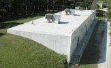
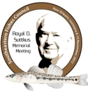

WE ARE HIRING!
About
The Tulane University Biodiversity Research Institute (TUBRI) is a private, non-profit zoological research center affiliated with Tulane University. Historically functioning as a natural history museum, comprising research collections of invertebrates, fishes, amphibians and reptiles, birds, mammals, and vertebrate fossils [see Historical Perspective], only the Royal D. Suttkus Fish Collection is being retained and TUBRI now specializes in biodiversity discovery (primarily in fishes) and biodiversity informatics research. TUBRI is an administrative unit of the Tulane University School of Science and Engineering. Henry L. Bart, Jr., Professor of Ecology and Evolutionary Biology serves as TUBRI Director.
TUBRI is located on the grounds of the F. Edward Hebert "Riverside" Research Center in the English Turn region of the Mississippi River, near Belle Chasse.
Donations
Help support our work, by donating to the Royal D. Suttkus Memorial Fund.

Royal D. Suttkus, who built the TUBRI Fish Collection (now named in his honor) to international prominence, also founded the Southeastern Fishes Council (SFC) in 1975. At its 2012 Annual Meeting in New Orleans, November 8th and 9th , SFC payed final tribute Suttkus, who passed away 28 December 2009.
A memorial honoring Suttkus’ was held on the grounds of the Tulane University Hebert Research Center in Belle Chasse, LA on November 10th.
Donations are being accepted to establish an endowed fund in memory of Royal D. Suttkus and his lasting contribution to the study of ichthyology. Proceeds from this fund will be used solely to support the Royal D. Suttkus Fish Collection and an associated collection of ichthyological literature.
For more information about Suttkus and how you can make a tax-deductible donation to the Suttkus Memorial Fund please: click here.